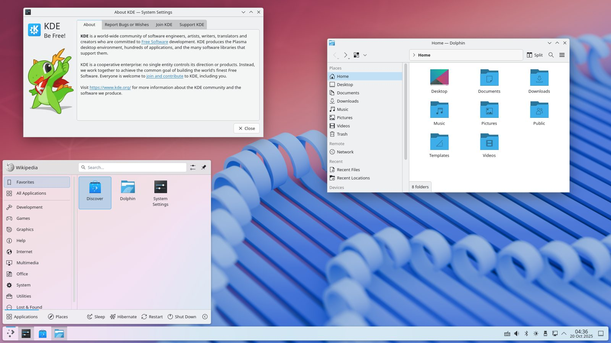

References / Operating system / 224
KDE Plasma 6 desktop
A free-software desktop whose launcher and panel are blurred, translucent glass over a pink and blue wallpaper.
- Source
- Wikimedia Commons: KDE Plasma 6.4.5 Light
- Creator
- KDE
- Made
- Plasma 6 released February 2024; screenshot of Plasma 6.4.5, 2025-10-20
- Style
- Glassmorphism (partial fit; agent-proposed, not yet reviewed by a person)
- Moods
- Airy, calm
- Evidence
- Inspected the GPL-licensed screenshot File:KDE Plasma 6.4.5 Light.png (1920 × 1080, Breeze Light theme, dated 2025-10-20) and stored a 1600 px copy.
- Reviewed
- Rights
- Open license, stored. License: GPL. Rights policy

Context
The Commons record describes the file as a screenshot of KDE Plasma 6.4.5 in the Breeze Light theme. It credits the software to KDE Plasma, the wallpaper to Krystian Zajdel, and the screenshot to User:Michio.kawaii, and gives the license as GPL. Wikimedia Commons.
The same desktop line appears earlier in the catalogue as KDE Plasma 4, whose glossy widgets belong to Frutiger Aero.
Observed
- The wallpaper is a soft, out-of-focus scene of blue ribbon-like coils on a pink-to-red ground.
- The application launcher at the lower left is a large panel with rounded top corners. The pink wallpaper shows through it as a smooth, blurred pastel wash.
- The taskbar along the bottom is a translucent, pale strip; the wallpaper tint shows through it faintly.
- The System Settings and Dolphin windows are opaque light grey with thin borders and a small radius.
- Icons are flat and blue; the type is a neutral sans-serif.
Why it belongs
Plasma uses glass the way Fluent Acrylic recommends: on transient and shell surfaces, not on document windows. Measured chromatic share of the stored image is 0.37, most of it from the wallpaper.
Borrow
Keep glass for the shell (launcher, panel) and leave working windows opaque.
Measured
Machine-extracted by tools/image-traits.py on . Full measurement.
- Mean chroma
- 0.22
- Palette
- #eff0f2 28%
- #5682d2 12%
- #ffffff 9%
- #648dd6 6%
- #f1dfe6 6%
- #a84d60 5%
- #ba6973 4%
- #92b2dc 4%

